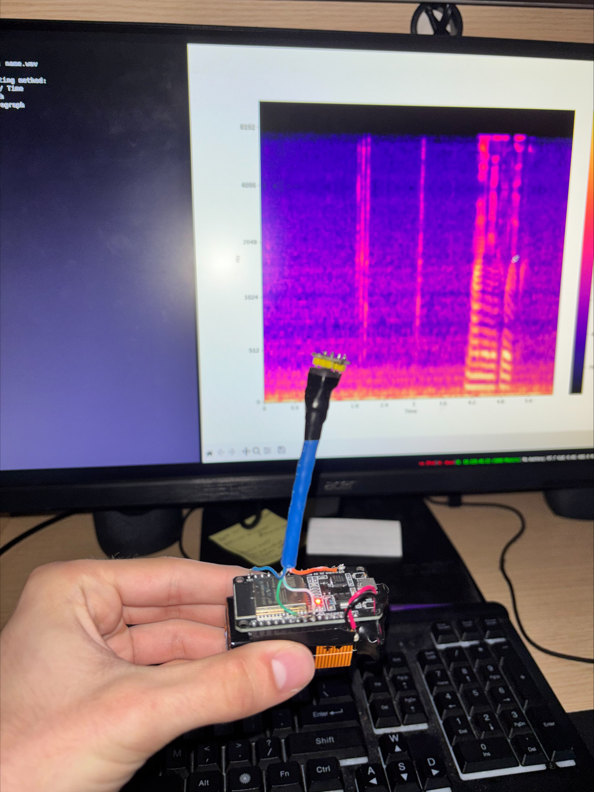

I made a wireless microphone to easily record and stream microphone data to my nixos machines.
It also has the capability:
This tool will help me process speech data for a local speech to text model that I am currently working on
The microphone itself is made from an ESP32, a INMP441 Microphophone, a DIY 5V voltage regulator and a 9 volt battery.
The microphone's communication method is through its access point created on startup. It will send raw 16-bit PCM bytes as Datagrams to the connected client on the network and that has initiated a fo-"connection" over over UDP

Since there are tons on network types and protocols this project is no where near complete, however I keep on adding to it when I encounter a new problem.
This python program can collect traffic on a selected wifi interface and analyze scanned packets from pcap or pcapng files.
As of right now the program can collect traffic from a network using tshark and collect systems and ports that are discoverable on the network and have future ideas to correlate their results.
I have put alot of focus in the speed of creating profiles of scanned devices using multithreading techniques, however the functionality to parse each protocol differently and represent that as useful information is
The program has many flaws and has alot of potential for improvement:
For undergraduate research in my sophomore year at Bridgewater State University I made a Man-In-The-Middle proxy server to see the headers of https requests.
The flow of the Proxy was to perform two ssl handshakes with both the client and the host pretending to be the other.
When forwarding packets between the two parties there is a stage between decrypting the data from one party and encrypting the data for the other to be able to see the content of the data flowing between.
This happens while the client and host think they are talking directly to each other.
Its been a while since ive taken a look at the code and the data captured to know if you could see the text/html content between.
This project will allow users to connect to open chat rooms, create new chat rooms and chat with other users within a chat room.
I forsee the biggest obsticle for this project is finding a format to preserve chat logs: database, flat-file, cached on user's system or a hybrid of these ive listed.
Depending on the architecture of data storage we choose, we will have to make some data formatting to make sure the user cant send anything harmfull to the system.
Anyways, im sure my partner Cecilia and I will figure out a solution when we rough it out.